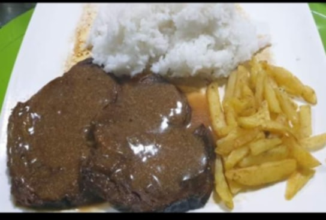

My name is Joshua Santos, and I was born in Sta. Ana, Manila.
Growing up, I didn’t have everything I wanted, but what I did have was sufficient for me. Now, let’s move on to the exciting parts! My favorite foods include chicken, potatoes, steak, and many more.
While I don’t particularly enjoy reading books, I find movies far more engaging
I’m currently 17 years old and studying at Eulogio Rodriguez Jr. High School, where I am in the 11th grade with honors—a proud achievement for me! Additionally, I have a wonderful girlfriend named Cristina Gonzaga, who brings joy to my life.